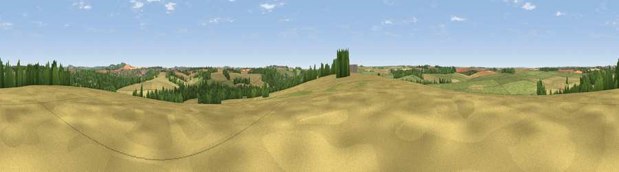

Viewpoint near West Amesbury
#28881 in England · top 47% of its area beats it · near West AmesburyThe view, rendered

A 360° render of this exact spot computed from the terrain model, tree cover and land cover — summer colours, afternoon light, calibrated against photographs of famous viewpoints. Real trees, hedges and buildings will differ in detail.
The panorama
Grey silhouette: terrain skyline in each direction (720 bearings, Earth curvature and refraction included). Dashed green: skyline with trees (+15 m) and buildings (+8 m) as obstacles. Blue strip: how far the ground is visible on each bearing.
Where the view opens
Wedge length = distance to the farthest visible ground on that bearing (vegetation-aware). Rings at 10, 25 and 50 km.
What fills the view
44% cropland · 38% grassland · 16% woodland · 2% built-up
Angular shares of the visible panorama (visual magnitude), not map area. Landscape diversity 0.48 (0–1 Shannon).
Key numbers
More beautiful places nearby
The staircase of upgrades: each row has a higher view potential than everything closer. Driving times are estimates from straight-line distance, calibrated against real road routing — check an actual route before setting out.
| Place | Direction | Drive | Score |
|---|---|---|---|
| Viewpoint near Upper Woodford | SSW · 2 km | ~6 min | 50.8 |
| Viewpoint near Upper Woodford | SSW · 3 km | ~8 min | 51.2 |
| Viewpoint near Bulford | ENE · 6 km | ~13 min | 60.7 |
| Viewpoint near Bulford | ENE · 7 km | ~14 min | 70.3 |
| Viewpoint near Oare | N · 23 km | ~38 min | 72.9 |
| Martinsell viewpoint | NNE · 24 km | ~39 min | 77.3 |
| Viewpoint near Berwick St John | SW · 29 km | ~45 min | 78.2 |
| West High Down | SSE · 58 km | ~81 min | 79.8 |
51.16472, -1.81367 · source: screening · position refined by local search. Computed location — check access rights before visiting.